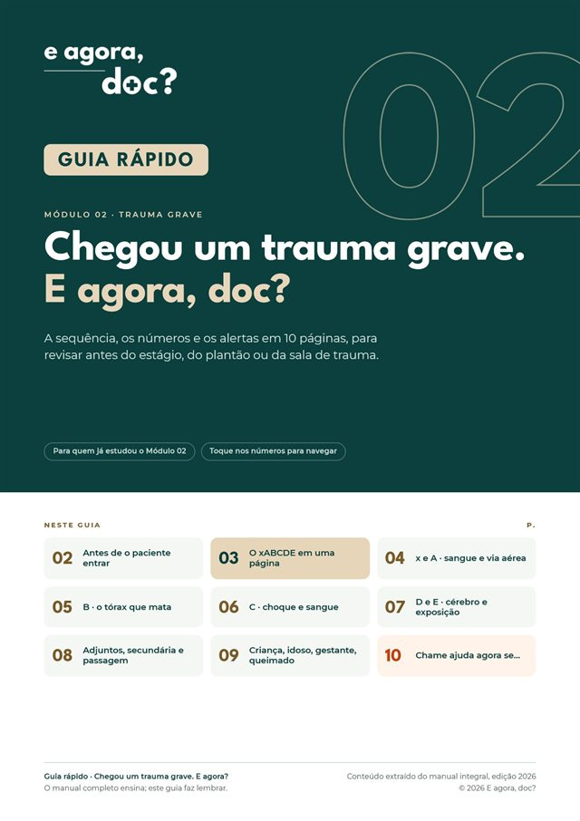
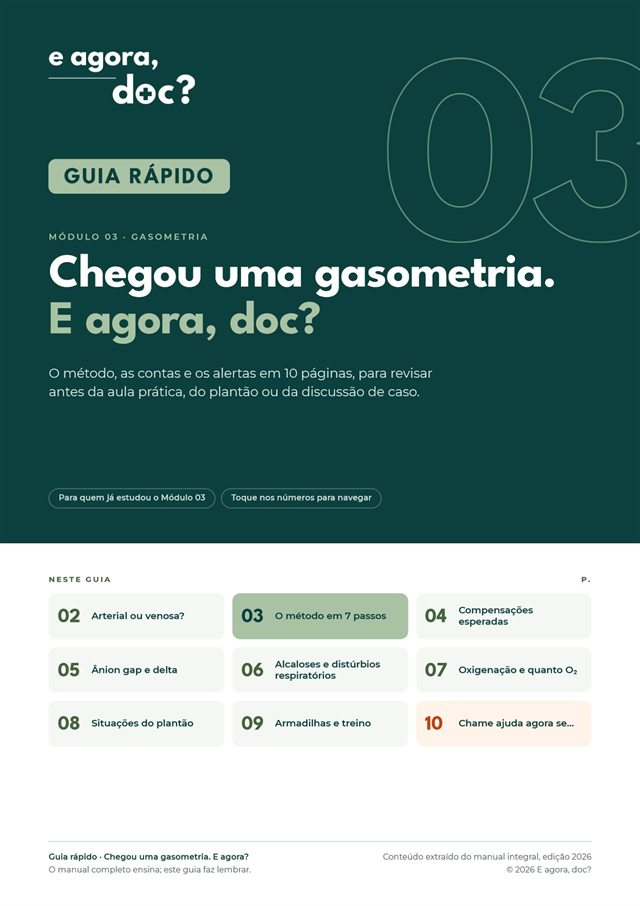
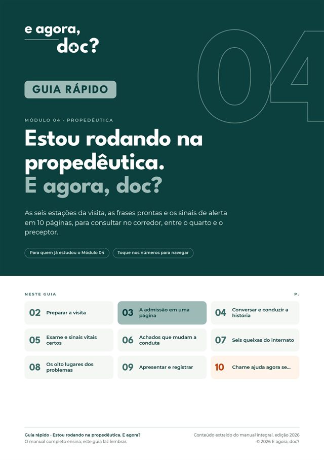

“Eu sei a teoria. Mas saberia o que fazer quando ela aparece na minha frente?”
As doze derivações parecem se embaralhar e o primeiro impulso é procurar o laudo automático.
No manualOnze passos de leitura, sempre na mesma ordem.
Manuais de prática clínica · Edição 2026
Manuais e guias rápidos de ECG, Trauma, Gasometria e Propedêutica para estudantes de Medicina que já estudaram o conteúdo e precisam aplicá-lo nas aulas práticas, no ciclo clínico e no internato.
O problema nunca foi falta de estudo
O que trava não é o critério: é não saber por onde começar, nem o que olhar primeiro.
As doze derivações parecem se embaralhar e o primeiro impulso é procurar o laudo automático.
No manualOnze passos de leitura, sempre na mesma ordem.
Na sala de trauma, a sequência decorada some quando tudo acontece ao mesmo tempo.
No manualO xABCDE letra por letra, com base no ATLS 11ª edição (2025).
Decorar fórmulas não diz o que o exame muda na conduta do paciente.
No manualUm método fixo em sete passos, do pH ao contexto clínico.
Conduzir a conversa, organizar os achados e apresentar o caso com clareza.
No manualPreparar, conversar, examinar, pensar, apresentar e registrar.
Capítulos em ordem, cada um respondendo a uma pergunta que você faria diante do paciente.
As aberturas “Em 30 segundos” e a seção “Se você só tiver 5 minutos”.
Sumário clicável, fichas de bolso e checklist final.
Quatro Manuais Integrais, a R$ 29,90 cada, com método, traçados e exames reais, casos integradores e casos para revisão com gabarito.
Manual prático de interpretação eletrocardiográfica, para quem já estudou a teoria e quer saber o que fazer quando o traçado chega às mãos.
R$ 29,90
O xABCDE na abordagem inicial do paciente gravemente traumatizado, para quem já estudou a sequência e quer saber o que fazer primeiro.
Base: ATLS, 11ª edição (2025)
R$ 29,90
Distúrbios ácido-base e oxigenação com um método fixo, para quem já decorou as fórmulas e quer saber o que o exame diz sobre o paciente.
Diretrizes conferidas: SSC 2026, SBD, ILAS
R$ 29,90
Anamnese, exame físico e apresentação do paciente ao preceptor, para quem já estudou semiologia e precisa usá-la à beira do leito.
Referências conferidas: DBHA 2025, NEWS2, CEM
R$ 29,90
Os 4 Manuais Integrais por R$ 89,90. Separados, somam R$ 119,60.
Comprar Kit ManuaisDez páginas com o essencial de cada módulo, para revisar antes da aula prática, do estágio ou do plantão. Feito para quem já estudou o módulo.
O método, os critérios e os padrões que não podem passar.

A sequência, os números e os alertas da sala de trauma.

O método, as contas e os alertas.

As seis estações da visita, frases prontas e sinais de alerta.
Kit com os 4 Guias Rápidos: R$ 24,90.
Os guias são material de revisão: não substituem o manual, a formação nem a supervisão clínica.
Só a revisão, só os manuais, ou tudo junto pelo menor preço.
R$ 24,90
4 PDFs · revisão
Nossa oferta principal: 8 PDFs, os 4 manuais e os 4 guias
R$ 99,90
R$ 144,50 · economize R$ 44,60
R$ 89,90
4 PDFs · estudo completo
De R$ 119,60 (4 × R$ 29,90) · economia de R$ 29,70
Prefere um módulo só? Cada Manual Integral sai por R$ 29,90.
Amostras reais: casos clínicos para você resolver, gabaritos comentados e páginas de dicas, exatamente como aparecem nos manuais e guias. Toque para ampliar.
Páginas isoladas, apenas para demonstração. Os PDFs completos são liberados somente após a compra.
Compra simples
A Coleção Completa, um kit ou um Manual Integral avulso.
O botão de compra leva ao checkout oficial da Kiwify, onde aparecem as formas de pagamento.
Após a confirmação, a Kiwify libera os arquivos e envia as instruções para o e-mail da compra.
PDFs com navegação por toque, no celular, tablet ou computador.
Para estudantes de Medicina que já estudaram a teoria e querem saber o que fazer quando o ECG, a gasometria, o trauma ou o paciente da enfermaria aparecem na frente: em aulas práticas, estágios e internato.
O Manual Integral (87 a 100 páginas) ensina: método, capítulos por pergunta, exemplos reais, casos integradores e casos para revisão com gabarito. O Guia Rápido (10 páginas) faz lembrar: é a revisão do essencial, feita para quem já estudou o módulo.
Não. Os guias são material de revisão. Nenhum dos materiais substitui a formação médica, a supervisão do preceptor ou os protocolos da sua instituição.
Sim: cada Manual Integral pode ser comprado separadamente por R$ 29,90. Os Guias Rápidos estão disponíveis no Kit Guias Rápidos (R$ 24,90) ou na Coleção Completa (R$ 99,90).
Em PDF, com sumário clicável e navegação por toque. Você pode ler no celular, no tablet ou no computador.
A compra é feita pela Kiwify. Após a confirmação do pagamento, a Kiwify libera os arquivos e envia as instruções de acesso para o e-mail informado no checkout.
O checkout da Kiwify disponibiliza pagamento por cartão de crédito e Pix. As opções aparecem no momento da compra.
Os manuais são da edição 2026, com última atualização bibliográfica em outubro/2026. Cada manual traz as suas referências; por exemplo, o de Trauma tem como base o ATLS, 11ª edição (2025).
Pelo WhatsApp: enviar mensagem.
Você aprendeu a teoria. Os 4 Manuais Integrais e os 4 Guias Rápidos em uma só compra: R$ 99,90.